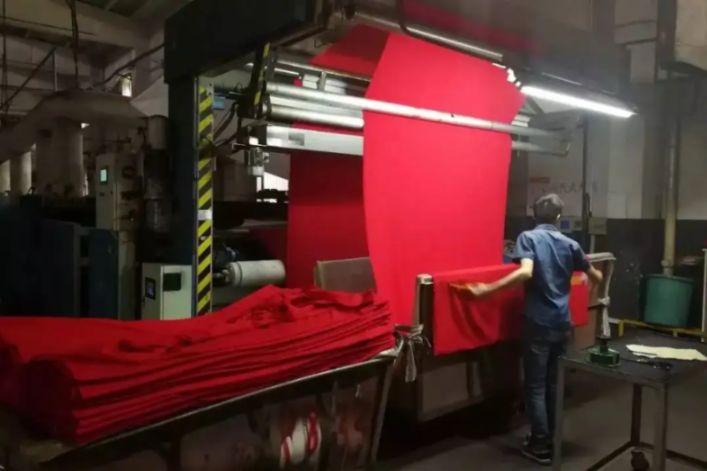
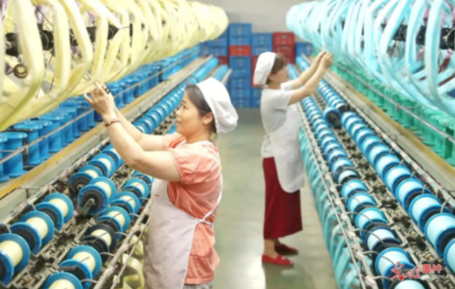
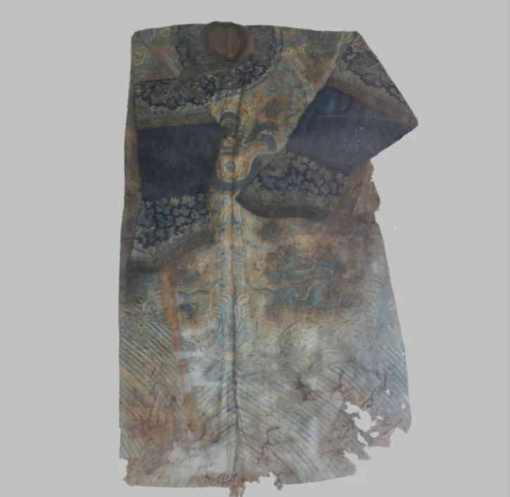

Goal 6: Clean water and sanitation
Dyes applying to silk was from plants and ores in ancient times. In modern times, chemical industries produces dyes with lower prices, but along with huge amount of toxic polluted water, casting a shade on our essential water supply.
The target metabolite, lycopene and patchulol, are all originally from plant. We use synthetic biology strategy instead of traditional extraction, to cut down its cost greatly. Besides, the remain liposoluble solvent are easier to recover, leaving a safer waste water to process, thus to have less impact on the environment.
The target metabolite, lycopene and patchulol, are all originally from plant. We use synthetic biology strategy instead of traditional extraction, to cut down its cost greatly. Besides, the remain liposoluble solvent are easier to recover, leaving a safer waste water to process, thus to have less impact on the environment.

Natural dyeing can make full use of the dye and reduces the harm to human, as those dyes are easily degrade in natural environment, especially water resources that are essential to mankind supply.
Goal 12: Responsible consumption

Silk and its related products have many distinctive characteristics. However, they may break easily or become yellow after being directly exposed to sunlight or being stained with sweat. For example, some silk artworks turn dim with faded colour and fragile fibers. From a sustainable perspective, they lose their value from the lost of their advantages, resulting in a low efficiency of the resource.

Our project has been stuck to this goal, taking in consideration many possible strategies of making full use of silk resources. Our dye product has a bright color and is friendly to the environment. For one thing it lowering the lost of value by delaying the colour fading, for the other the waste water during production is less toxic and harmful to the environment, achieving both goals of saving energy and protecting nature. Additionally, the patchulol in our dyes proves to be able to inhibit the growth of some microorganism, which provide a novel solution to the preservation of silk products.